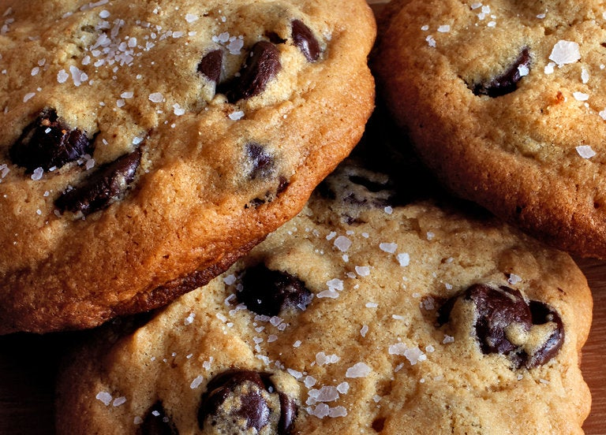

Salted Tahini Chocolate Chip Cookies

Choclate chip cookies enhanced with the flavor of sesame through incorporating tahini.
Ingredients
- 4 ounces/113 grams unsalted butter at room temperature
- ½ cup/120 milliliters tahini, well stirred
- 1 cup/200 grams granulated sugar
- 1 large egg
- 1 egg yolk
- 1 teaspoon vanilla extract
- 1 cup plus 2 tablespoons/150 grams all-purpose flour, or matzo cake meal (See tip)
- ½ teaspoon baking soda
- ½ teaspoon baking powder
- 1 teaspoon kosher salt
- 1¾ cups/230 grams chocolate chips or chunks, bittersweet or semisweet
- Flaky salt, like fleur de sel or Maldon
Steps
-
In the bowl of an electric mixer fitted with the paddle attachment, cream butter, tahini and sugar at medium
speed until light and fluffy, about 5 minutes. Add egg, egg yolk and vanilla and continue mixing at medium
speed for another 5 minutes.
-
Sift flour, baking soda, baking powder and kosher salt into a large bowl and mix with a fork. Add flour
mixture to butter mixture at low speed until just combined. Use a rubber spatula to fold in chocolate chips.
Dough will be soft, not stiff. Refrigerate at least 12 hours; this ensures tender cookies.
-
When ready to bake, heat oven to 325 degrees and line a baking sheet with parchment paper or nonstick baking
mat. Use a large ice cream scoop or spoon to form dough into 12 to 18 balls.
-
Place the cookies on the baking sheet at least 3 inches apart to allow them to spread. Bake 13 to 16 minutes
until just golden brown around the edges but still pale in the middle to make thick, soft cookies. As
cookies come out of the oven, sprinkle sparsely with salt. Let cool at least 20 minutes on a rack.
**TIP
To make this recipe kosher for Passover, substitute matzo cake meal for the all-purpose flour.